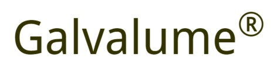
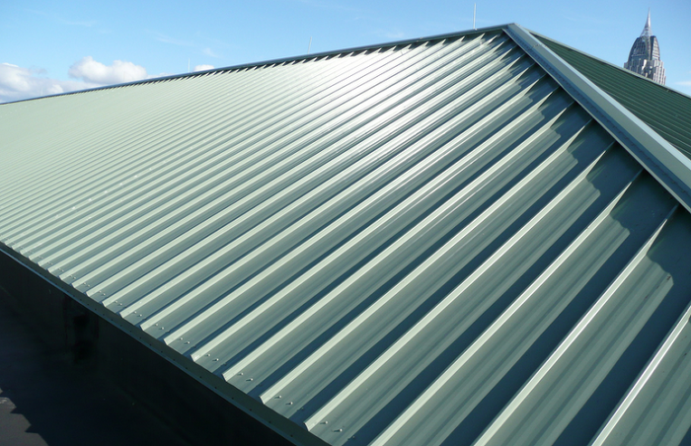
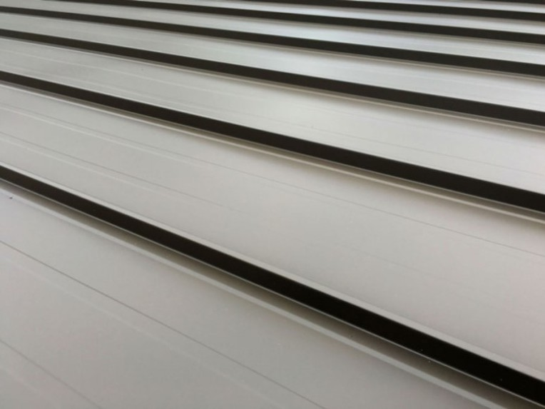

갈바륨(Galvalume)은 아연도금강판(galvanized steel)에 알루미늄(aluminium)이 결합된 강판입니다.
아연의 장점인 희생방식성과 내알카리성, 알루미늄의 장점인 내구성과 내열성, 내산성을 가장 이상적으로 결합시킨 알루미늄(Al) 55% -아연(Zn) 43.4% 합금용융도금강판입니다.
즉 아연과 알루미늄의 장점을 취한 제품이죠.
갈바륨은 기존 용융아연도금강판(Gl)에 비해 내식성이 약 3배~6배 우수하면서도 가공성까지 뛰어난 제품입니다.

미국 Bethlehem steel사에서 개발하여, 현재 미국 BIEC International Inc.에서 글로벌 라이센스를 가지고 있습니다.
BIEC와 라이센스 계약을 맺은 한국업체는 2개사로, 동국제강(구, 유니온스틸)과 동부제철에서만 독점 생산하고 있습니다.
준불연 DK보드 판넬은
내식성과 가공성이 우수한
갈바륨만을 고집하고 있습니다.
문의 1855-2240